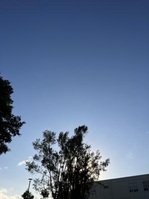

うるがいの話 ある日
最新: Castration【うるがいの話 ある日】とは 一日だけのプログです
『うるがいの話』の最新一日だけのプログで、通信料が少なく経済的だ。カニの画像をクリックすると全ての日付が載る『うるがいの話』サイトを表示します
|
|
【うるがいの話】 うるがい(ｳﾙｶﾞｲ urugai)とは、『もずくがに』の名前でとても大きくなります。 |
|---|---|
|
|
【カミマヤーの話】 猫のことを方言でマヤーといいます。カミマヤー（kamimayaa）とは、神の猫のことです。 |
|
【たながぁの音楽】 たながぁ（ﾀﾅｶﾞｰ tanagaa）とは手長えびのことで、何種類かあり大きいのは車 エビぐらいになります。 |

|
【ぶながぁの話】 ぶながぁ(ﾌﾞﾅｶﾞｰ bunagaa)とは、赤い髪の毛、赤い身体、そして身長は１ｍ２０ｃｍ ぐらい、川の蟹を食べているの目撃された。場所は沖縄県国頭郡大宜味村のと ある村僕の隣近所に住んでいる爺さんから、聞いた話です。 |
|
|
【ギーマの話】 ギーマ(giima)とは、山原の里山に咲くスズランに似た、 花を付けます。実は食べられます、 気が付くと口の周りが紫になっています。 |
2023年12月19日 (火）Castration
15:12

去勢をするのは、肉の『雄臭』を防ぐためです。雄の子豚は、生後１週間以内
に、農家の人の手により外科的去勢（物理的に睾丸を除去）されます。外科的
去勢のやり方は、鋭利なカミソリでふぐり（陰嚢）を切開、睾丸を取り出し、
一気に引き抜き、切り取る、というものです。
獣医の物語『ヘリオット先生奮戦記』を英読していら、去勢の話がでてきた。
漁師の父親は、生活のため養豚業も営んでいた。小学生の頃から、現場は目撃
していないが子豚チャンを去勢していることは、傷跡などから知っていた。一
度、去勢していないオス豚（種豚か？）を、家で試しにと食べたことがあった
。臭くて食べられるものではなかったことを思いだす。